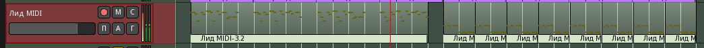

Ведущие партии - наиболее важный компонент композиции, воспринимаемый слушателем, всё остальное - не более, чем фон и украшение для него. Можно выделить два типа таких партий: лид и соло. Первый исторически восходит к вокальному треку (или лид-гитаре), который под аккомпанемент остального ансамбля воспроизводит основную мелодию песни, а второй - к джазовому соло, где какой-нибудь музыкант демонстрирует свои умения импровизации, пока остальные молчат или осторожно подыгрывают ему. Они похожи по своему функциональному значению, основное различие в том, что лид должен играть какую-нибудь строгую, красивую, запоминающуюся мелодию, а для соло характерна определённая свобода.
Мы строим композицию снизу вверх, начиная с ритма и баса, поэтому партия лида будет сильно зависеть от того, что для него приготовлено заранее, что задаётся другими играющими инструментами. Бывает и обратный способ, сверху вниз, особенно в мелодической музыке - когда уже имеется главная тема, которую необходимо аранжировать. Тогда наоборот все остальные партии становятся зависимыми и второстепенными по отношению к лиду.
Добавим две MIDI-дорожки (группа Лиды) c Reasonable Synth, назовём их Лид MIDI и Соло MIDI. Как всегда, подключим аудио-выходы к шине Лиды, добавим фильтры MIDI-каналов (11 и 12), выберем эти каналы в свойствах дорожек, включим мониторинг входа. В Claudia подключим к ним MIDI-вход комнаты. Соло MIDI пока можно заглушить. Небольшое электронное соло не помешает, но оно необязательный, факультативный элемент композиции и не относится к её основе, поэтому вернёмся к нему позже.
Лид лучше делать одновременно с подбором тембра, потому что сам звук синтезатора может сильно повлиять на мелодическую составляющую. На MIDI-клавиатуре при включенном зацикленном воспроизведении пытаемся наиграть какую-нибудь мелодию, записывая на 11 дорожке в Rosegarden (отключить банк и программу) удачные ритмические попадания и мелодические находки. Аккомпанемент можно время от времени глушить, чтобы не отвлекал. Придётся написать три-четыре версии, а потом выбрать лучшую. Как правило, это будет не первая. Отбракованные версии или их части потом можно использовать в вариациях и других отрывках.
На картинке ниже - выбранный вариант. Это небольшая четырёхтактная фраза, повторяющаяся с небольшими вариациями. Этого хватит на 16 тактов, а во второй половине будет проигрыш. Для него создадим простенькую ритмическую последовательность. Импортируем результат в Ardour и отключим мониторинг входа. Используется синтезатор Helm с патчем hard lead 4

Ритм для проигрыша копируем от середины до конца наброска. С появлением лида всё звучит уже слишком пересыщено, поэтому заглушим два первых региона арпеджио (выделить и Alt-1). Не факт, что в будущем всё это обязательно будет играть одновременно.
Звук воспринимается тяжело. Может быть, самый минимум пространства поможет. Надо заметить, что этот дилэй, который мы сейчас добавим, скорее всего, вовсе не тот самый, который будет звучать в финале. Это временный костыль для мониторинга во время создания композиции. Попробуем добавить вспомогательную шину с плагином задержки. Создаём две шины (вторая на всякий случай, на будущее, если захотим добавить реверб), имя - AUX, конфигурация - стерео, группа - Вспомогательные (можно разделять приглушение). Скрываем дорожки в окне редактора и переходим к микшеру. Выходы шин просто отправляем на Мастер. Первую переименуем в Задержка AUX и добавим туда перед фейдером плагин Delay/TAL-Dub-3. В интерфейсе плагина выбираем пресет Gentle St. Delay, параметр Wet увеличим до +9.0 дБ, а Dry установим на нулевое значение (-96 дБ), потому что пропускать необработанный звук через эту шину нам не нужно.
Теперь добавим посылы для дорожек аккомпанемента и лидов. Можно просто отправить звук с их шин. Шёлкаем правой кнопкой мыши где-нибудь ниже ячейки Фейдер линейки шины Лиды, и в контекстном меню выбираем Добавить внешний посыл без порта JACK.../Задержка AUX. Дальше просто перетаскиваем ячейку Задержка AUX, на соседнюю линейку Аккомпанемент, она скопируется. Параметром Послать можно регулировать уровень посылаемого на канал задержки сигнала. В главном окне редактора дорожки шин можно скрыть.
На этом с основой закончим. Конечно, получившийся набросок схематичен, не идеален и далёк от завершения. Но теперь у нас есть музыкальный материал, от которого можно оттолкнуться.